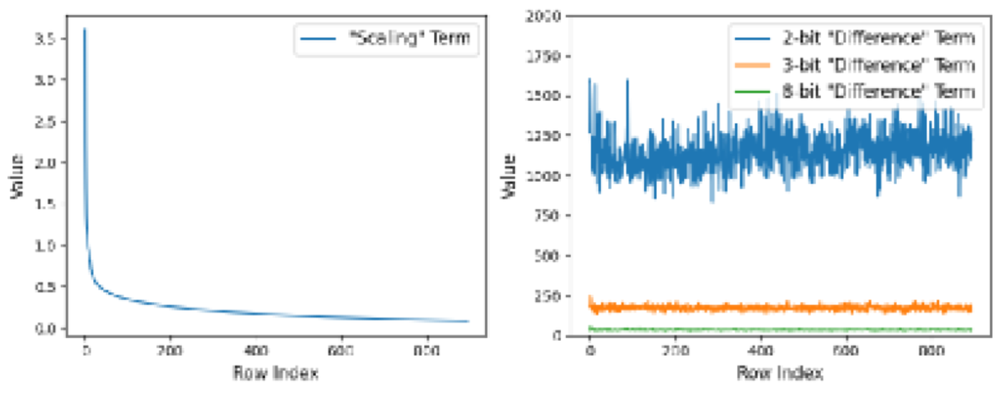

Why it matters왜 중요한가
Reasoning breaks in a different way than retrieval — so you must find the heads that carry the reasoning, not the heads that carry recall.
추론은 검색(retrieval)과는 다른 방식으로 무너진다 — 그래서 '기억을 나르는 헤드'가 아니라 '추론을 나르는 헤드'를 찾아야 한다.
Long chain-of-thought makes the KV cache the deployment bottleneck, but reasoning chains are fragile: drop the wrong intermediate state and the model spirals into repetitive loops. Token-dropping methods (H2O, R-KV) evict states by local importance and disrupt the chain. Head-reallocation methods (DuoAttention, KVZip) keep "important" heads — but their importance scores come from retrieval tasks, so they preserve recall heads while the heads that actually keep reasoning consistent and know when to stop get compressed, producing fluent-but-endless wrong answers. RLKV reframes the question as: directly observe which heads, when starved of cache, cause the answer to go wrong — and let on-policy RL discover them.
긴 CoT는 KV 캐시를 배포 병목으로 만들지만, 추론 사슬은 깨지기 쉽다 — 엉뚱한 중간 상태를 버리면 모델은 반복 루프로 빠진다. Token-dropping(H2O, R-KV)은 지역적 중요도로 상태를 퇴출해 사슬을 끊는다. Head-reallocation(DuoAttention, KVZip)은 '중요한' 헤드를 살리지만, 그 중요도는 검색 과제에서 나온 것이라 recall 헤드만 보존하고, 정작 추론 일관성과 언제 멈출지를 쥔 헤드는 압축돼 '유창하지만 끝없는 오답'을 낳는다. RLKV는 질문을 바꾼다 — 어떤 헤드가 캐시를 굶기면 정답을 망치는가를 직접 관찰하고, on-policy RL이 그것을 스스로 찾게 한다.

By the numbers핵심 숫자
at near-lossless accuracyKV 캐시 절감
무손실에 가까운 정확도로
(SGLang, sp=0.6)종단 속도향상
(SGLang, sp=0.6)
at high sparsity (max)기준선 대비 최대
높은 희소성에서(점)
(Qwen-2.5-7B-R1, sp=0.2)AIME24 Full 대비 향상
(Qwen-2.5-7B-R1, sp=0.2)
(LongReason transfer)학습 rollout → 평가 컨텍스트
(LongReason 전이)
(from DeepScaleR)자기증류 수학 문제
(DeepScaleR에서)
Results — keep the right heads, beat the baselines결과 — 맞는 헤드만 살리면 기준선을 이긴다
| Benchmark | Llama-3.1-8B-R1 | Qwen-2.5-7B-R1 | Qwen-3-4B-Thinking |
|---|---|---|---|
| GSM8K | 86.8 (−2.4, sp=0.4) | 90.1 (+1.0, sp=0.4) | 94.4 (−0.7, sp=0.4) |
| Math500 | 84.6 (+1.6, sp=0.4) | 86.0 (−1.8, sp=0.4) | 75.6 (−2.0, sp=0.6) |
| AIME24 | 40.0 (+3.3, sp=0.4) | 50.0 (+6.7, sp=0.2) | 50.0 (+6.7, sp=0.4) |
| MBPP | 63.8 (+1.2, sp=0.4) | 63.2 (+0.0, sp=0.2) | 81.0 (−0.2, sp=0.4) |
| MMLU-Pro (CS) | 47.8 (+0.7, sp=0.2) | 50.7 (−2.7, sp=0.5) | 60.7 (+7.0, sp=0.6) |
| MMLU-Pro (Chem.) | 40.0 (−0.2, sp=0.4) | 53.2 (+2.2, sp=0.4) | 74.2 (+5.8, sp=0.4) |
In one diagram한 장의 그림
Idea: use RL outcomes to define "critical"아이디어: '결정적'을 RL 결과로 정의한다
Mixed Attention with Gating Adapters
Each head (l, h) gets a scalar α ∈ [0,1]: output = α·full + (1−α)·local, where local attention keeps only constant sink + recent tokens. This shrinks the search space to just L × H gates, with all LLM weights frozen.
각 헤드 (l, h)에 스칼라 α ∈ [0,1]를 둔다 — 출력 = α·full + (1−α)·local, local은 고정 sink + 최근 토큰만 유지. 탐색 공간이 L × H 게이트로 줄고, LLM 가중치는 모두 동결.
GRPO + adaptive L1, stabilized
GRPO maximizes answer-correctness reward with an L1 penalty driving α→0. To stop the sparse-reward / dense-penalty collapse, RLKV uses self-distillation sampling (train on problems the model already solves) and adaptive penalty weighting (β shrinks, or hard-cuts off below threshold τ, when reward drops). KL penalty is dropped since weights are frozen.
GRPO가 정답 보상을 최대화하고 L1 패널티가 α→0으로 민다. 희소 보상 / 조밀 패널티 붕괴를 막기 위해 자기증류 샘플링(모델이 이미 푸는 문제로 학습)과 적응적 패널티 가중(보상이 떨어지면 β 감소, 임계 τ 미만이면 완전 차단)을 쓴다. 가중치가 동결이라 KL 패널티는 제거.
How it works어떻게 작동하나
- Attach a gate per head헤드마다 게이트 부착Add one learnable α per attention head that mixes full attention with a cheap sink+local window — only L×H new parameters, LLM frozen.어텐션 헤드마다 full 어텐션과 값싼 sink+local 윈도를 섞는 학습 가능한 α를 하나 추가 — 새 파라미터는 L×H개뿐, LLM은 동결.
- Probe with on-policy RLon-policy RL로 탐침Sample reasoning rollouts, reward correct final answers (GRPO), and apply an L1 penalty so α collapses to 0 for any head the model can do without.추론 rollout을 샘플링하고 최종 정답에 보상(GRPO), L1 패널티로 없어도 되는 헤드의 α를 0으로 무너뜨린다.
- Stabilize the training학습 안정화Curate 3,000 solvable DeepScaleR problems for dense reward, and adapt β (with a hard cutoff at reward threshold τ) to avoid the degradation→more-sparsity→collapse spiral.조밀한 보상을 위해 풀 수 있는 DeepScaleR 문제 3,000개를 선별하고, β를 적응(보상 임계 τ에서 하드 컷오프)시켜 '성능저하→더 희소→붕괴' 악순환을 차단.
- Discretize & serve이산화 후 서빙Pick top-α heads up to the target ratio as reasoning-critical → full cache; everyone else uses sink+local only. A dual KV pool in SGLang turns this into up to 2.06× throughput.목표 비율까지 α 상위 헤드를 추론-결정적으로 선택→full 캐시; 나머지는 sink+local만. SGLang의 이중 KV 풀이 이를 최대 2.06× 처리량으로 전환.
What to take away그래서, 가져갈 것
Outcome-defined importance beats heuristics. Defining "critical" by whether the final answer survives compression — not by retrieval scores — finds heads that genuinely hold reasoning, yielding 20–60% reduction at near-lossless accuracy.
결과로 정의한 중요도가 휴리스틱을 이긴다. 검색 점수가 아니라 '압축해도 최종 정답이 살아남는가'로 '결정적'을 정의하니 진짜 추론을 쥔 헤드를 찾고, 20~60% 절감에 무손실급 정확도.
Reasoning heads ≠ retrieval heads. Compressing retrieval heads causes overlength (never-stopping) errors; compressing reasoning heads causes repetition / wrong answers — distinct failure signatures that justify a new identification method.
추론 헤드 ≠ 검색 헤드. 검색 헤드를 압축하면 overlength(멈추지 못함) 오류, 추론 헤드를 압축하면 반복/오답 — 서로 다른 실패 양상이 새 식별법의 근거.
Real serving win. A dual KV pool in SGLang converts the head-level sparsity into measured 2.06× end-to-end speedup, close to the 2.40× theoretical limit — not just a paper metric.
실제 서빙 이득. SGLang의 이중 KV 풀이 헤드 수준 희소성을 측정값 2.06× 종단 속도향상(이론 한계 2.40×에 근접)으로 전환 — 종이 위 지표가 아님.
Cheap to fit, frozen backbone. Only L×H gates train; the model stays untouched, so RLKV is a lightweight add-on rather than a fine-tune.
가볍게 학습, 백본 동결. L×H 게이트만 학습하고 모델은 그대로라, RLKV는 파인튜닝이 아닌 경량 부가물.